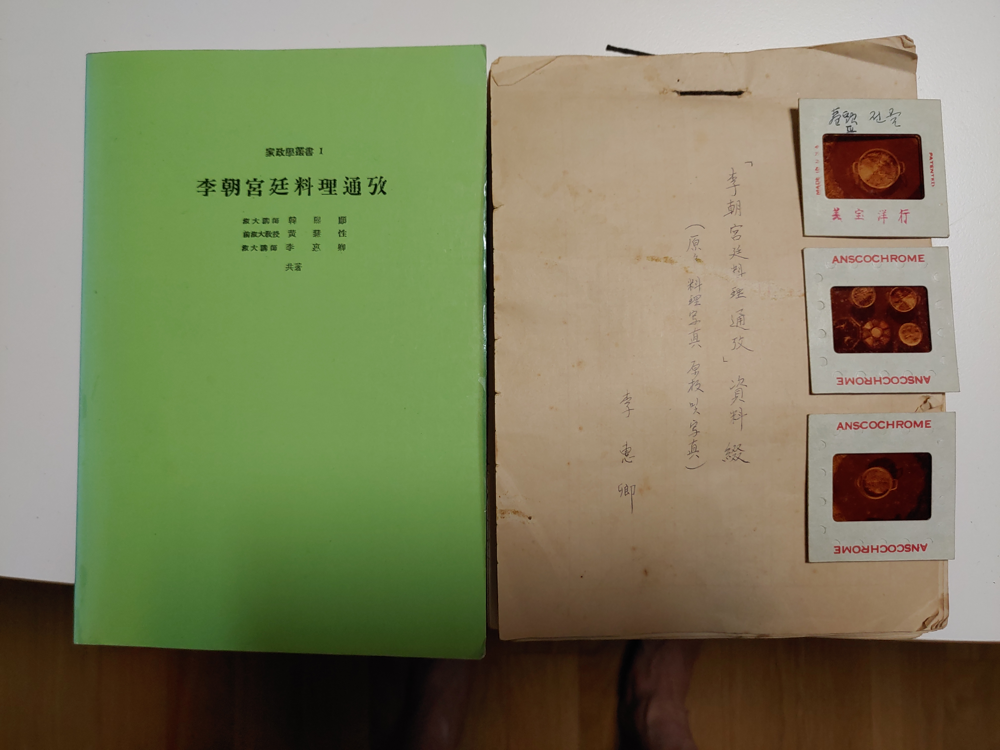
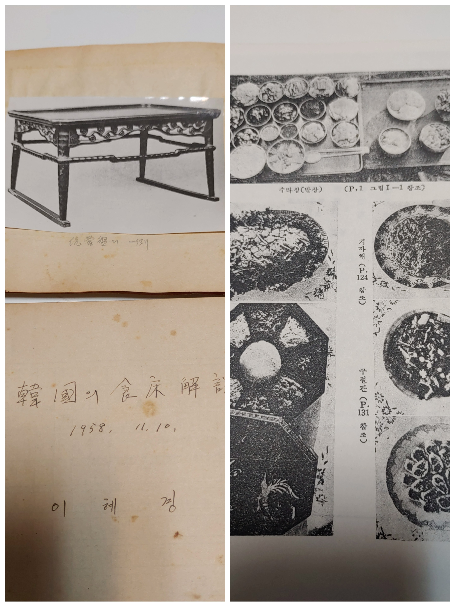
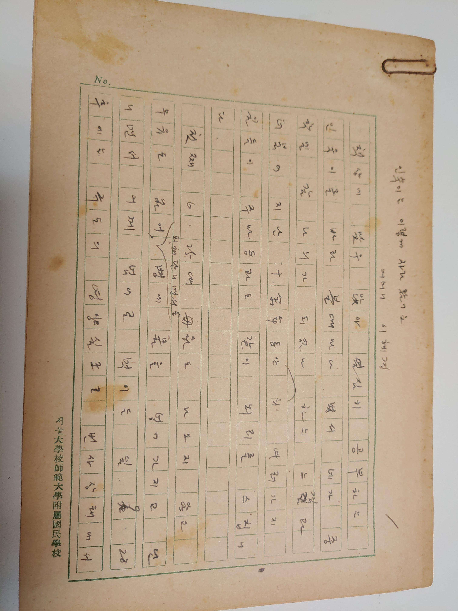
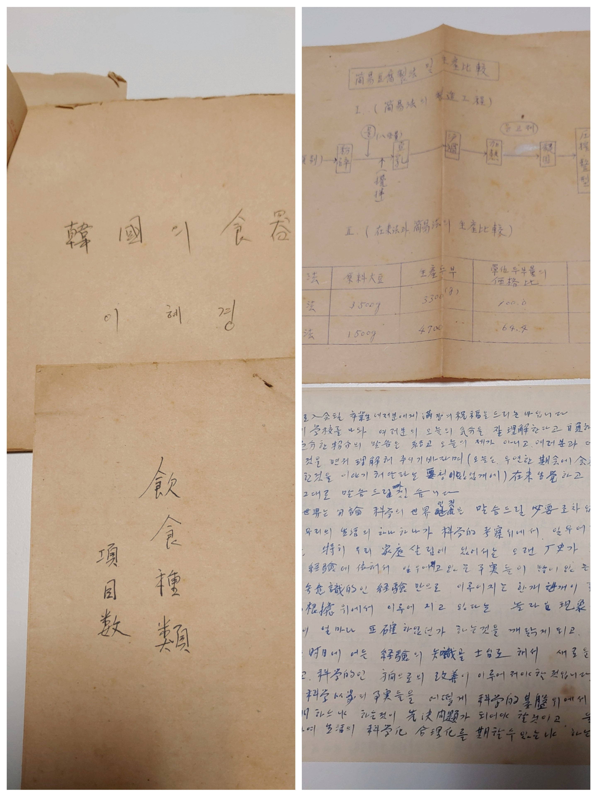
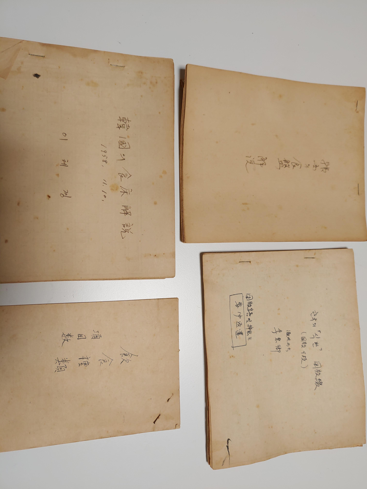
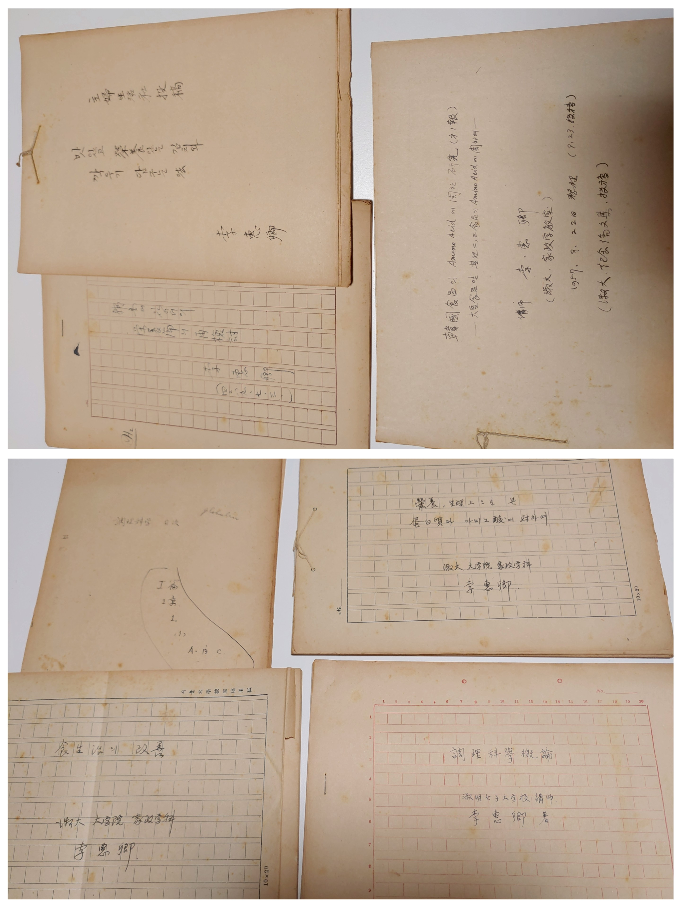
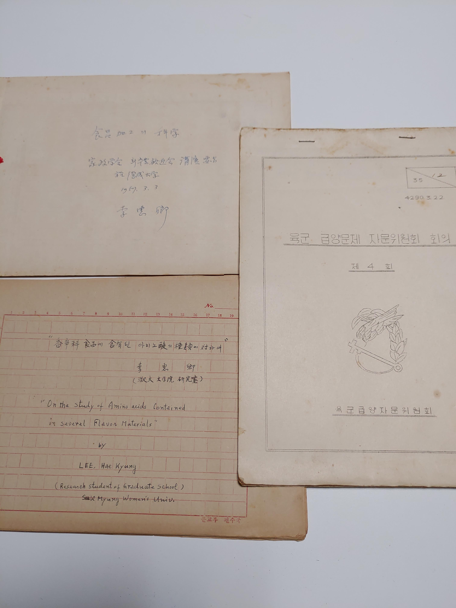
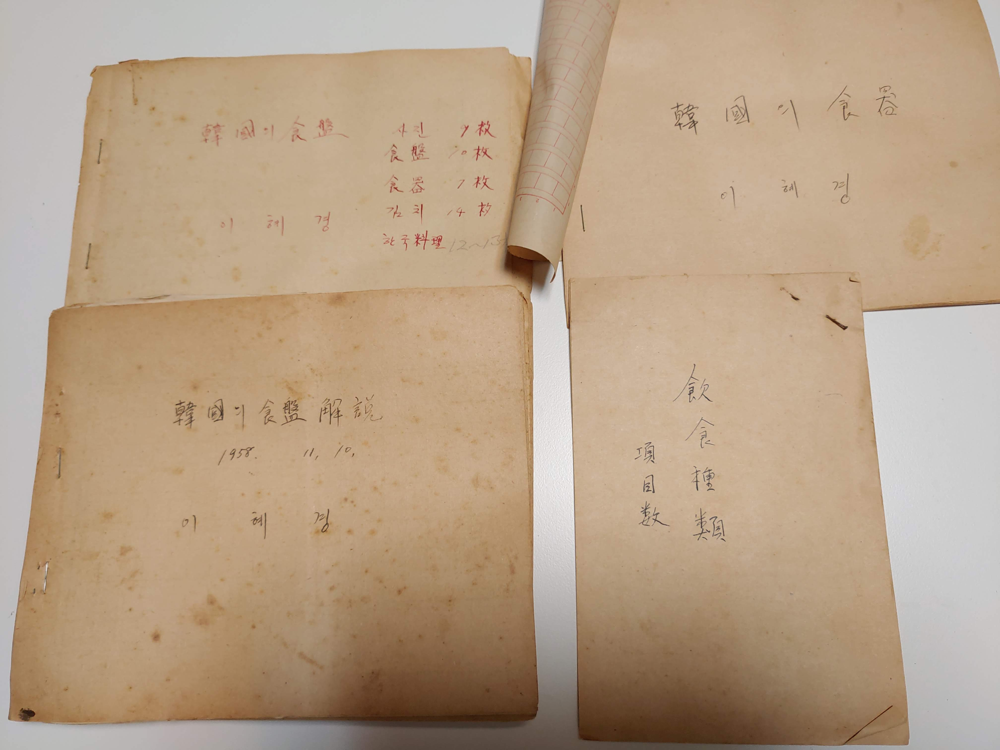

어머니의 대표업적이자 궁정요리에 관한 귀한 전문서적으로 인정받는 저서. 숙명여대대학원-강사 시절. 한희순(조선조 주방상궁), 황혜성(숙명여전교수, 궁중음식연구원, 장녀=궁중음식문화재단 한복려이사장), 이혜경 공저. 책에 수록된 각종 궁중요리의 사진은 당시 아버지께서 슬라이드로 정성들여 찍어 보관하셨던 자료임. 누님의 기억에 의하면 누님이 초등 저학년시절 날좋은때에 한상궁이라는 분이 청량리관사에 오셔서 궁정요리시연회를 하셨는데 이때의 각종요리들을 아버지께서 정원잔디밭에 햇살아래서 사진찍어두셨던것. 이후 어머니께서 궁정요리특강을 일본에까지 다니며 강연하셨으며 차후 황혜성씨가 합류하여 함께 궁정요리정통성을 이끌었다함. 저술과 관련된 수많은 원고와 사진자료들이 아직 보관되어 있는데 자세히보면 많은부분 아버지의 지원과 기여가 였보임.
이밖에도1950년대말~60년대초 당시 어머니는 많은분량의 저술 및 강연활동을 하신기록이 있어서 여기에 대표적 사진(표지)만이라도 기록으로 남기고자 함. 어머니의 전문성을 이어받아(?) 막내딸과 작은며느리는 식품학을 전공 하였다.


어머니 원고를 정리하던중 어느 기고문을 찾았다. 제목은 '인숙이는 이렇게 자라왔어요' 어머니 이혜경.
아마도 사대부속국민학교 교지에 실린 모범학생부모의 기고문이 아니었을까? (필체를보면 아버지쓰신듯). 누님은 초등시절 남보다 일년이나 앞서 입학했음에도 아버지의 세심한 열정에 힘입어 수재급 학생이었던듯 하다. 졸업식 대표. 내용을 잠시 보면 아버지께서 늘 하시던 말씀이 생각난다. 즉 한살도 안된 아기에게 험난한 피난길은 무척 고달팟으리라. 더운 여름날 먹을물도 부족하여 탈수증... 남들처럼 기차지붕에 올라타고 이불을 덮어쓴채로 (14후퇴?)... 상상초월이다.

원고를 보면 아버지는 지도교수요 논문대필자 이셨던듯. 제자들에게도 학문에 임하는 태도에 있어서 엄하기로 소문난 아버지시니 어찌 설렁설렁 넘어갈 수 있었겠나..

당시는 여러모로 우리 대한민국의 기반이 다져지던 시기. 학문의 선구자들도 맏은바 학술분야 및 교육체계의 기틀을 마련하는데 무에서 유를 창조해야하는 사명. 아버지의 저술활동 생산성은 상상이상이셨지만 어머니도 그당시 수많은 원고를 탈고.


아버지의 풍부한 생화학 지식이 활용됨...

어머니 아버지 친필원고는 아직도 박스가득하다...
이귀한 史料들을 어느 박물관/연구원/재단/교수에게 기증하여 궁중음식문화 보존가치를 영속할 것인가....
1957년경 아버지가 써주신 어머니 이력서. 당시 어머니 논문저술 상당수는 아버지가 관여하신것으로 보인다 아마도 숙명여대 학위 그리고 교수지원 목적이 아니었을까 함.
위에 이력서를 보면 어머니 경성사범졸업후 나남공립본정국민학교 훈도를 지내셨네요. 그뒤 상경하여 숙명여대진학...